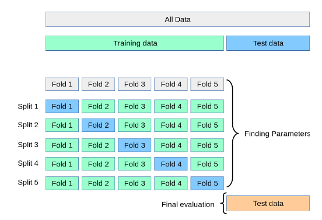

Validación de modelos.
Contents
11. Validación de modelos.#
11.1. Introducción.#
Una vez se tenga implementado un modelo en scikit learn, con los hiperparámetros correspondientes, es necesario proceder a ver y estudiar qué calidad tiene ese modelo, incluso si se quieren comparar resultados obtenidos mediante cambios en los hiperparámetros del modelo, habría que comparar los resultados obtenidos y ver cual es el modelo que mejor se ajusta a los datos. Para hacer todo esto scikit learn nos ofrece una serie de herramientas muy interesantes para facilitarnos estas tareas.
Otro de los aspectos importantes a tener en cuenta cuando queremos desarrollar un modelo de machine learning, es cómo probar nuestro modelo, es decir comprobar que el mismo también se ajusta bien a unos datos de prueba que no han intervenido para el entrenamiento del modelo.En este sentido hay que tener en cuenta que ajustar los parámetros de una función de predicción y además probarla con los mismos datos es un gran error, ya que este tipo de modelo tendría una validación de los datos casi perfecta, pero no nos aseguraríamos que el modelo es lo suficiente general como para poder hacer la predicción de otro tipo de datos. Un modelo que no se generaliza de forma adecuada a otros datos, diremos que está sobreajustado y no serviría para conseguir que propósito que nosotros queremos.
Para evitar lo anterior lo que normalmente se hace es dividir el conjunto de datos en dos grupos, uno servirá para entrenar el modelo ( train en inglés) y otros que normalmente de denomina test y que servirá para testear si el modelo se puede generalizar o no a cualquier conjunto de datos, es decir sería el conjunto de prueba para comprobar la fiabilidad del modelo.
Este método de dividir todos los datos en dos subconjunto (train y test), se puede hacer fácilmente en scikit learn por medio de la función auxiliar train_test_split. Veamos un ejemplo indicativo de cómo poder conseguir esto.
import numpy as np
from sklearn.model_selection import train_test_split
from sklearn import datasets
from sklearn import svm
X, y = datasets.load_iris(return_X_y=True)
X.shape, y.shape
((150, 4), (150,))
Vamos a quedarnos con un 40 por ciento de los datos para poder evaluar el modelo
X_train, X_test, y_train, y_test = train_test_split(
X, y, test_size=0.4, random_state=0)
X_train.shape, y_train.shape
X_test.shape, y_test.shape
clf = svm.SVC(kernel='linear', C=1).fit(X_train, y_train)
print("Acuracidad datos entrenamiento: ", clf.score(X_train, y_train))
print("Acuracidad datos de test (prueba): ", clf.score(X_test, y_test))
Acuracidad datos entrenamiento: 0.9888888888888889
Acuracidad datos de test (prueba): 0.9666666666666667
No obstante y para asegurar la generalización del modelo, otro procedimiento que se sigue en ocasiones para conseguir esto es dividir el conjunto de datos en tres grupos de observaciones (no en dos como se ha comentado antes):
Grupo train ( de entrenamiento)
Grupo de validación (el nuevo grupo)
Grupo de test (el de chequeo final de los datos)
Con estos tres grupos de datos el procedimiento que se sigue es el siguiente: se entrena el modelo con el grupo train, después de realiza la evaluación con el grupo de evaluación y por último y cuando el experimento parece tener éxito se hace la evaluación final con el grupo de test.
Como puede entenderse, el procedimiento descrito anteriormente es muy difícil de implementar cuando el conjunto de datos no es lo suficientemente amplio como para poder elegir de forma aleatoria y representativa los tres conjuntos de datos, de tal forma que en estos casos los resultados pueden depender de una elección aleatoria particular para el par de conjuntos (entrenamiento, validación).
11.2. Validación cruzada#
Debido al inconveniente anterior, existe también otro procedimiento para validar de una forma más adecuada un modelo. Se trata del procedimiento denominado validación cruzada (de forma abreviada CV). Con este procedimiento se elimina el grupo de validación y se sigue manteniendo el conjunto de test. El procedimiento, denominado k-fold CV, que se sigue con este método es el se describe a continuación.
El conjunto de datos se divide en k subconjuntos disjuntos, y entonces para cada uno de estos grupos o folds, se hace lo siguiente:
El modelo se entrena usando k-1 grupos.
El modelo resultantes se valida o testea con el grupo que no se ha utilizado en el entrenamiento del modelo.
De esta manera se obtienen k scores (uno por cada modelo obtenido con este procedimiento), y entonces la validación del modelo se realiza con la media de los k escores obtenidos, medida a la que se suele añadir la desviación típica de los esos datos. Este enfoque puede ser computacionalmente costos, pero no desperdicia demasiados datos.
Una explicación gráfica de este procedimiento se puede ver en el siguiente gráfico.

11.2.1. corss_val_score#
Uno de los procedimientos más sencillos y cómodos para usar la validación cruzada en scikip learn es utilizando la función auxiliar cross_val_score en el estimador y el conjunto de datos.
Para ver un ejemplo de cómo poder utilizar esta función, a continuación se utiliza el conjunto de datos iris cargado anteriormente y se comprueba el ajuste del modelo mediante un una validación cruzada de un total de 4 grupos de datos o folds
from sklearn.model_selection import cross_val_score
clf = svm.SVC(kernel='linear', C=1, random_state=42)
scores = cross_val_score(clf, X, y, cv=4) # cv=4 se toman 4 folds
print("Los escores obtenidos son los siguientes")
scores
Los escores obtenidos son los siguientes
array([1. , 0.97368421, 0.97297297, 0.97297297])
Una vez obtenidos esos valores, lo que se suele hacer es calcular la puntuación media y su desviación estándar, como se muestra a continuación.
print("%0.2f acuracidad del modelo con una desviación estándar de %0.2f" % (scores.mean(), scores.std()))
0.98 acuracidad del modelo con una desviación estándar de 0.01
Como puede observarse, de forma predeterminada, corss_val_score utiliza como métrica de cálculo el método score del modelo. Este comportamiento predeterminado se puede cambiar sin más que utilizar el parámetro scoring y darle como valor una regla de evaluación del modelo de las que se utilizan en scikit learn y cuya relación se puede ver en este enlace. Igualmente, en el tema medidas de la Bondad del Ajuste, se puede var de forma pormenorizada muchas de las métricas que se utilizan para comprobar el ajuste realizado.
from sklearn import metrics
scores = cross_val_score( clf, X, y, cv=4, scoring='f1_macro')
scores
array([1. , 0.97316157, 0.97333333, 0.97316157])
En los ejemplos anteriores se ha proporcionado al parámetro cv un valor entero, por lo que en estos casos se utilizan las estrategias de partición de datos (más adelante se explican este tipo de estrategias ) denominadas KFold o StratifiedKFold. Si el estimador es un clasificador y el valor de y es una clasificación binaria o multiclase, se utiliza StratifiedKFold, en otro caso se usa KFold.
Pero este comportamiento se puede modificar y utilizar otro tipo de estrategias de validación cruzada, debiendo pasar para ello al parámetro cv un iterador de validación cruzada, como puede verse en el siguiente ejemplo.
from sklearn.model_selection import ShuffleSplit
n_samples = X.shape[0]
# Definimos la estrategia de partición de los datos
cv = ShuffleSplit(n_splits=4, test_size=0.3, random_state=0)
cross_val_score(clf, X, y, cv=cv)
array([0.97777778, 0.97777778, 1. , 0.95555556])
Se pueden también definir funciones a medida para pasar su nombre al parámetro cv.
def custom_cv_2folds(X):
n = X.shape[0]
i = 1
while i <= 2:
idx = np.arange(n * (i - 1) / 2, n * i / 2, dtype=int)
yield idx, idx
i += 1
custom_cv = custom_cv_2folds(X)
cross_val_score(clf, X, y, cv=custom_cv)
array([1. , 0.97333333])
11.2.2. cross_validate#
la función cross_validate hace las mismas funciones de cross_val_score pero puede devolver más información.
Permite especificar múltiples métricas para la evaluación del modelo.
Devuelve un diccionario que contiene tiempos de ajustes, tiempos de puntuación y opcionalmente puntuaciones de entrenamiento así como de estimadores ajustados, además de la puntuación de prueba.
Para la evaluación de múltiples métricas, el valor devuelto es un diccionario con las siguientes claves: [‘test_<scorer1_name>’, ‘test_<scorer2_name>’, ‘test_<scorer…>’, ‘fit_time’, ‘score_time’].
El parámetro return_train_score por defecto tiene un valor de False con la finalidad de ahorrar tiempo de cálculo, entonces para evaluar también las puntuaciones en el conjunto de entrenamiento, debe establecerse a un valor de True.
Las métricas múltiples se pueden especificar como una lista, una tupla o un conjunto de nombres de marcador predefinidos:
from sklearn.model_selection import cross_validate
from sklearn.metrics import recall_score
scoring = ['precision_macro', 'recall_macro']
clf = svm.SVC(kernel='linear', C=1, random_state=0)
scores = cross_validate(clf, X, y, scoring=scoring)
sorted(scores.keys())
scores['test_recall_macro']
array([0.96666667, 1. , 0.96666667, 0.96666667, 1. ])
También se pueden definir como un nombre de anotador de asignación en un diccionario a una función de puntuación predefinida o personalizada:
from sklearn.metrics import make_scorer
scoring = {'prec_macro': 'precision_macro',
'rec_macro': make_scorer(recall_score, average='macro')}
scores = cross_validate(clf, X, y, scoring=scoring,
cv=5, return_train_score=True)
sorted(scores.keys())
scores['train_rec_macro']
array([0.975 , 0.975 , 0.99166667, 0.98333333, 0.98333333])
A continuación se muestra un ejemplo de cross_validate con una sola métrica.
scores = cross_validate(clf, X, y,
scoring='precision_macro', cv=5,
return_estimator=True)
sorted(scores.keys())
['estimator', 'fit_time', 'score_time', 'test_score']
11.3. Estrategias de partición de datos.#
Este tipo de estrategias también asumen la denominación de Iteradores de Validación cruzada (Cross validation iterators) y dependiendo del conjunto de datos con los que se esté trabajando, se pueden asumir diferentes estrategias:
11.3.1. Datos igualmente distribuidos.#
11.3.1.1. K-Fold#
Con esta estrategia se divide todo el conjunto de datos en k grupos de igual tamaño, llamados también flods (si k=n entonces esta estrategia es igual que la denominada Leave One Out que se verá posteriormente ). En este caso la función de predicción aprende de los k-1 folds y el folds restante se utiliza como prueba de test.
11.3.1.2. Repated K-Fold.#
Con esta estrategia, lo que se hace es repetir el procedimiento anterior de división en k grupos de igual tamaño, n veces.
11.3.1.3. Leave One Out (LOO).#
En este caso generamos una validación cruzada, pero de tal manera que en cada iteración se deja un elemento fuera que servirá de test del modelo, el resto de datos servirá para entrenar el modelo.
11.3.1.4. Leave P Out (LPO).#
Con este modelo de selección de muestras, se eliminan cada vez p datos del conjunto original que servirán para hacer el test y el resto de datos se utilizan para entrenar el modelo. Por lo tanto es un método muy similar a LOO visto antes, y en total el número de muestras de entrenamiento será igual a \(\binom{n}{p}\).
11.3.1.5. Permutaciones aleatorias o Shuffle & Split.#
El iterador ShuffleSplit genera un número de divisiones del conjunto de datos definido por el usuario de forma totalmente independiente en generación de los datos. En este caso las muestras se “barajan” y después se dividen en conjunto de train y de test.
A continuación se muestra esto con un ejemplo
from sklearn.model_selection import ShuffleSplit
X = np.arange(15)
ss = ShuffleSplit(n_splits=5, test_size=0.25, random_state=0)
for train_index, test_index in ss.split(X):
print("%s %s" % (train_index, test_index))
[14 4 2 13 10 7 11 3 0 5 12] [1 6 8 9]
[11 0 10 9 5 14 8 12 7 6 1] [ 2 4 3 13]
[13 6 10 14 11 1 8 3 2 0 5] [ 4 12 7 9]
[ 5 14 9 12 11 2 3 7 4 10 0] [13 6 1 8]
[ 5 14 7 11 13 9 12 1 4 8 6] [ 0 10 2 3]
Podemos observar que como el 25 por ciento de n=15 es 3.75, las muestras de test están formadas por un total de cuatro elementos. Con el parámetro n_split=5 se indica que queremos obtener un total de 5 pares de muestras train-test.
11.3.2. Datos con clases no equilibradas.#
Algunos problemas de clasificación pueden exhibir un gran desequilibrio en la distribución de las clases objetivo: por ejemplo, podría haber varias veces más muestras negativas que muestras positivas.
En tales casos, se recomienda utilizar el muestreo estratificado implementado en StratifiedKFold y StratifiedShuffleSplit para garantizar que las frecuencias de clase relativas se conserven aproximadamente en cada conjunto de pares train-test
11.3.2.1. K-fold estratificado.#
Este método de partición de la muestra, StratifiedKFoldy, conserva las proporciones de clase, tanto en el conjunto de datos para entrenamiento como en el de test. Similar a K-Fold visto antes pero manteniendo las proporciones de la clase que hay en el conjunto de datos.
11.3.2.2. División aleatoria estratificada.#
El método StratifiedShuffleSplit es una variación de ShuffleSplit visto antes, pero teniendo en cuenta que mantiene las proporciones de la clase de clasificación tanto en el conjunto de prueba como en el de test.
11.3.3. Datos agrupados.#
Estaremos en esta situación cuando tengamos un conjunto de datos de tal forma que una serie de datos tengan el mismo identificador. Un ejemplo de esta situación se puede dar por ejemplo si tenemos datos médicos de determinados pacientes, en este caso cada paciente tendrá un identificador único y este dato sería el identificador del grupo.
En este caso, nos gustaría saber si un modelo entrenado en un conjunto particular de grupos se generaliza bien a los grupos no vistos y que estarían en el grupo de test. Para medir esto, debemos asegurarnos de que todas las muestras en el pliegue de validación provengan de grupos que no están representados en absoluto en el pliegue de entrenamiento emparejado.
Scikit learn nos proporciona las siguientes herramientas para poder conseguir esto. El identificador de agrupación de datos se indica mediante el parámetros groups.
11.3.3.1. Group k_Fold.#
GroupKFold es una variación de K-fold visto anteriormente pero teniendo en cuenta el grupo de pertenencia, de esta manera se garantiza que un mismo grupo no esté tanto en el entrenamiento como en el test.
Por ejemplo, supongamos que tenemos cuatro pacientes cuya identificación es 1,2,3 y 4 entonces se puede implementar esta estrategia de la siguiente manera.
from sklearn.model_selection import GroupKFold
X = [0.1, 0.2, 2.2, 2.4, 2.3, 4.55, 5.8, 8.8, 9, 10, 3, 5, 7]
y = ["a", "b", "b", "b", "c", "c", "c", "d", "d", "d", "d","e","c"]
groups = [1, 1, 1, 2, 2, 2, 3, 3, 3, 3, 4, 4, 4]
gkf = GroupKFold(n_splits=3)
for train, test in gkf.split(X, y, groups=groups):
print("%s %s" % (train, test))
[ 0 1 2 3 4 5 10 11 12] [6 7 8 9]
[3 4 5 6 7 8 9] [ 0 1 2 10 11 12]
[ 0 1 2 6 7 8 9 10 11 12] [3 4 5]
Como puede verse en la salida anterior, una misma persona no está al mismo tiempo en el grupo de entrenamiento y de test, y así de esta manera tenemos perfectamente separados los grupos.
11.3.3.2. StratifiedGroupKFold#
StratifiedGroupKFold es similar a GroupKFold, lo único que mantiene las proporciones de clase de la muestra total en los conjuntos de train y de test.
11.3.3.3. LeaveOneGroupOut#
LeaveOneGroupOut similar LOO visto anteriormente, pero teniendo en cuenta el grupo de pertenencia.
from sklearn.model_selection import LeaveOneGroupOut
X = [0.1, 0.2, 2.2, 2.4, 2.3, 4.55, 5.8, 8.8, 9, 10, 3, 5, 7]
y = ["a", "b", "b", "b", "c", "c", "c", "d", "d", "d", "d","e","c"]
groups = [1, 1, 1, 2, 2, 2, 3, 3, 3, 3, 4, 4, 4]
logo = LeaveOneGroupOut()
for train, test in logo.split(X, y, groups=groups):
print("%s %s" % (train, test))
[ 3 4 5 6 7 8 9 10 11 12] [0 1 2]
[ 0 1 2 6 7 8 9 10 11 12] [3 4 5]
[ 0 1 2 3 4 5 10 11 12] [6 7 8 9]
[0 1 2 3 4 5 6 7 8 9] [10 11 12]
11.3.3.4. Dejar p grupos fuera (LeavePGroupsOut)#
LeavePGroupsOut es similar a LPO, pero teniendo en cuenta que un grupo no puede estar al mismo tiempo en el grupo de train y de test.
11.3.3.5. División aleatoria grupal.#
El iterador GroupShuffleSplit se comporta como una combinación de ShuffleSplity LeavePGroupsOut.
from sklearn.model_selection import GroupShuffleSplit
X = [0.1, 0.2, 2.2, 2.4, 2.3, 4.55, 5.8, 0.001]
y = ["a", "b", "b", "b", "c", "c", "c", "a"]
groups = [1, 1, 2, 2, 3, 3, 4, 4]
gss = GroupShuffleSplit(n_splits=4, test_size=0.5, random_state=0)
for train, test in gss.split(X, y, groups=groups):
print("%s %s" % (train, test))
[0 1 2 3] [4 5 6 7]
[2 3 6 7] [0 1 4 5]
[2 3 4 5] [0 1 6 7]
[4 5 6 7] [0 1 2 3]
11.4. Valiación cruzada para las series temporales.#
Los datos de series temporales se caracterizan por la correlación entre observaciones cercanas en el tiempo ( autocorrelación ). Sin embargo, las técnicas clásicas de validación cruzada, como KFoldy ShuffleSplitsuponen que las muestras son independientes y están distribuidas de manera idéntica, y darían como resultado una correlación irrazonable entre las instancias de entrenamiento y prueba (lo que produce estimaciones deficientes del error de generalización) en los datos de series temporales. Por lo tanto, es muy importante evaluar nuestro modelo para datos de series temporales sobre las observaciones “futuras” menos parecidas a las que se utilizan para entrenar el modelo. Para lograr esto, una solución es proporcionada por TimeSeriesSplit.